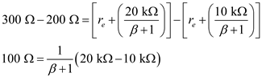
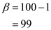

Consider the following expression for the output resistance of an emitter follower:
Substitute  for
for  , and
, and  for signal resistance,
for signal resistance,  .
.
Consider that  increases to
increases to  , when . Therefore, substitute
, when . Therefore, substitute  for
for  , and
, and  for signal resistance,
for signal resistance,  .
.

Subtract the equations of output resistances.

Simplify the expression further to find the value of current gain,  .
.

Thus, the value of current gain,  is 99.
is 99.
 from the expression of output resistance.
from the expression of output resistance. .
. and load resistance is
and load resistance is  .
. .
.
 for
for  ,
,  for
for  ,
,  for
for  , and 99 for
, and 99 for  .
. of the amplifier is, .
of the amplifier is, .